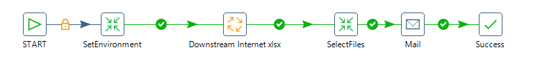
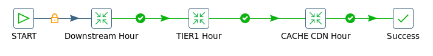

Reporte Downstream Internet Wnn¶
1. OBJETIVO¶
El presente documento buscar explicar y detallar el proceso que genera el Reporte Downstream Internet.
2. ALCANCE¶
Áreas involucradas: Performance de Red
3. DEFINICIONES¶
Falda: Servidor UNIX en donde se importan los XML desde el proveedor, y en donde se encuentra Smart. El nombre es falda.claro.amx.
Cortado: Servidor LINUX en donde se importan los CSV desde el proveedor.
El nombre es cortado.claro.amx y la dirección IP física es 10.105.146.8
4. DESCRIPCIÓN GENERAL¶
PENDIENTE
5. MACROFLUJO¶
DESCRIPCIÓN DETALLADA¶
6.1. Datos de origen y datos destino¶
- Server Origen y Path: falda.claro.amx /calidad/DownstreamInternet/
- Frecuencia actualización: Frecuencia semanal(domingos a las 7 am )
- Tipo de Archivo de Salida: .xlsx
6.2. Shell Copiar Archivos Origen a Destino y limpieza de los mismos¶
Los scripts son los siguientes:
6.4. Pentaho¶
Estructura del proyecto:

- Proceso Pentaho End to End

- Proceso DownstreamInternet
En este proceso se encarga de ejecutar las queries para generar el Excel de salida. En el Excel se muestra cada trabajo en una hoja diferente.
- Proceso DownstreamTIER1
Este proceso se encarga de ejecutar la query en Table TIER-1 Hour, en el siguiente paso se da formato a la fecha (dd/MM/yyyy) y para finalizar se genera la solapa de datos en la hoja de Excel.

Este proceso se realiza de la misma manera para:
o Downstream Hour o CACHECDN Hour
7. CONTROLES¶
No contiene controles
8. REPROCESO MANUAL¶
No tiene reproceso.
Se envía vía email un archivo Excel con el nombre: Downstream Internet_20170309_15